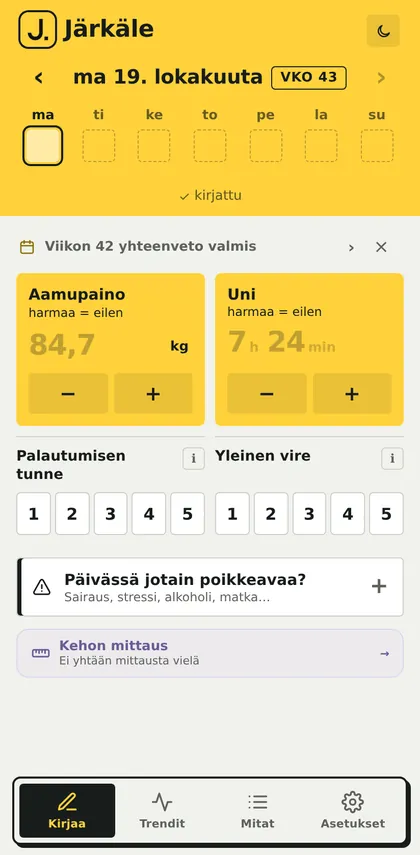
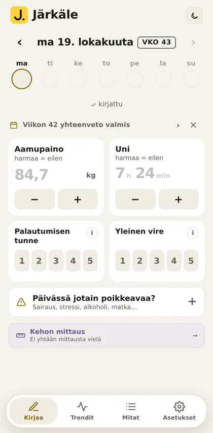
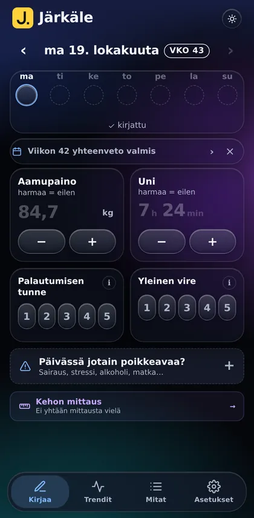
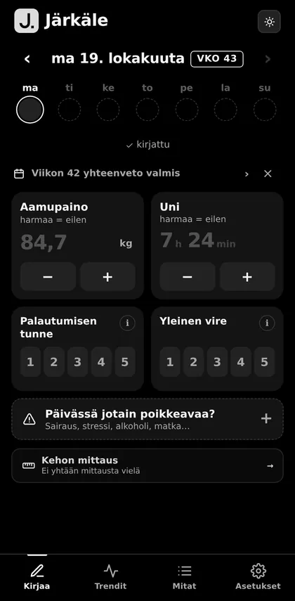
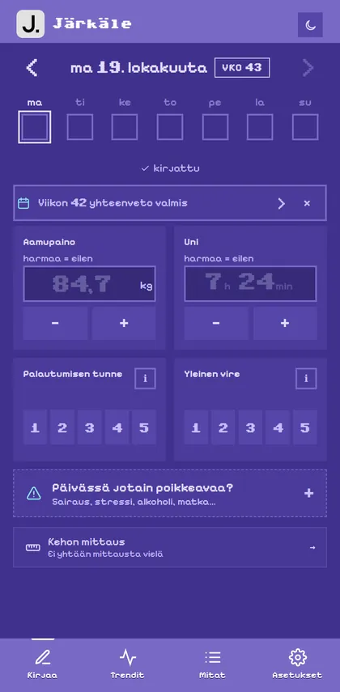
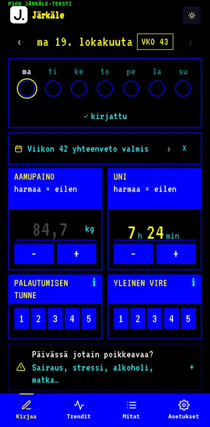
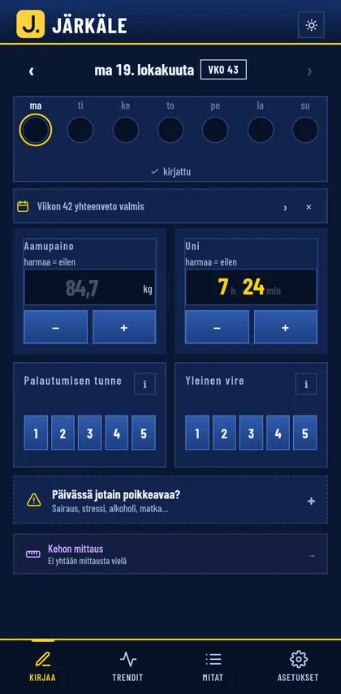
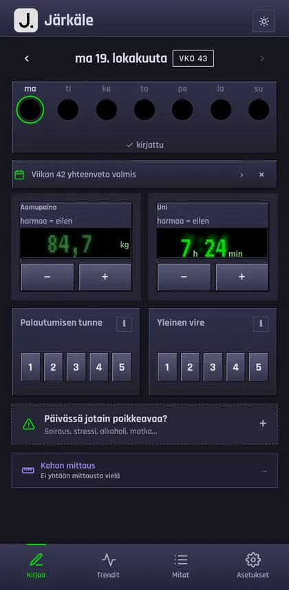
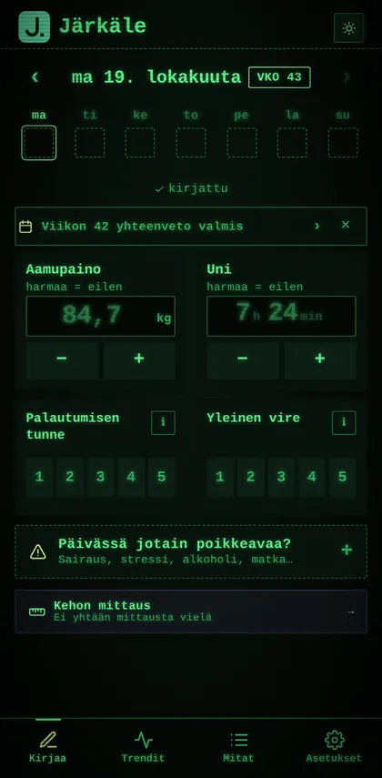

Edellinen kerta harmaana, yksi napautus kuittaa. + nostaa painoa. Tallennus lyö leiman.
Sali
Oma ohjelma sisään, kirjaus nopeaksi
Ohjelma sisään tekstinäLiitä valmentajan ohjelma Wordista, muistiinpanoista tai viestistä, tai Strongin Jaa treeni -teksti. Järkäle tunnistaa treenipäivät, sarjat, supersarjat sekä rest-pause- ja pudotussarjat ja ohittaa ohjetekstit. Viisijakoinen ohjelma menee sisään alle minuutissa. Ei kirjoitettua ohjelmaa? Kirjoita liikkeet, joita teet nyt, niin niistä tulee ohjelma.
Historia Strongista ja HevystäTuo vanhat treenit vientitiedostosta: Treeni → Asetukset → Tuo treenihistoria. Ennätykset ja liikkeiden kehitys jatkuvat siitä, mihin jäit.
Sarja yhdellä napautuksellaEdellisen kerran kilot ja toistot ovat valmiina harmaina. Jos teit saman, kuittaa. Painoa ja toistoja säädät − / + -napeilla avaamatta näppäimistöä.
Treenit ovat käytössä, kun valitset aloituksessa Kirjata treenejä tai Molempia. Myöhemmin: Asetukset → Treenit, cardio ja kaudet → Saliohjelmat ja treeniseuranta.
Ajastin, ääni, värinä, painon askel, rasittavuuden kirjaus ja historian tuonti: Treeni → Asetukset.
Ajastimen ääni ja värinä toimivat, kun Järkäle on auki näytöllä. Selainsovellus ei pysty hälyttämään lukitulla näytöllä.
Miten se toimii
Vain ne kentät, jotka valitset
Useimmat seurantasovellukset näyttävät kymmeniä kenttiä, joita et koskaan täytä. Järkäleessä valitset asetuksista, mitä seuraat, ja kirjausnäkymässä näkyvät vain ne. Painon ja unen seuraaja näkee kaksi kenttää. Kaiken seuraaja näkee kaiken.
Mitä voit seurata
Keho ja fiilis samassa näkymässä
Älylaite mittaa sykkeen ja unen. Sitä se ei tiedä, miltä sinusta tuntuu – sen kirjaat itse yhdellä numerolla.
Paino ja kehoAamupaino, 7 päivän keskiarvo, kehon mitat ja rasvaprosentti
Uni ja palautuminenTuntimäärä ja oma tuntemus 1–5
SaliOma ohjelma, sarjakirjaus, ennätykset ja kehityskäyrät
TrenditViikko, kuukausi, vuosi – ja yksi havainto joka päivältä
Oma fiilisPalautumisen tunne ja yleinen vire numerona. Vain sinä tiedät, miltä tänään tuntuu – ei mikään laite.
Verenpaine Verensokeri Migreeni Kuukautiskierto Lääkkeet Kivut Kehon mitat Huomio
Uutta · 2.18.120 · lokakuu 2026
Historian tuonti, erikoistekniikat ja treeni ensin
Treenihistoria Strongista ja Hevystä. Treeni → Asetukset → Tuo treenihistoria ja sovelluksen vientitiedosto. Liikkeet voi yhdistää Järkäleen liikkeisiin ennen tuontia. Lämmittelysarjat jätetään pois, ja tuonnin voi perua.
Ohjelman tuonti tarkemmaksi. Strongin Jaa treeni -teksti käy sellaisenaan. Wordista kopioidussa ohjelmassa supersarjat säilyvät, ja liikkeen perässä sulkeissa oleva ohje siirtyy liikkeen ohjeeksi.
Rest-pause- ja pudotussarjat. Ohjelman merkintä kuten ”+ R/P + DS” luo treeniin merkityt lisärivit, ja pudotussarjan paino ehdotetaan valmiiksi (30 % kevyempi). Lisärivin voi lisätä myös liikkeen ⋯-valikosta. Lisärivit eivät kasvata sarjamäärää eivätkä ole ennätyksiä.
Treeni ensin. Kesken jäänyt treeni avautuu suoraan, kun avaat sovelluksen. Jos kirjaat pelkkiä treenejä, sovellus aukeaa Treeni-välilehdelle. Suunniteltuna treenipäivänä Kirjaa-sivulla näkyy seuraava treeni ja Aloita-nappi (treenipäivät: Asetukset → Tavoitteet).
Arkistointi helpommaksi. Kun tuot uuden ohjelman, sovellus kysyy, arkistoidaanko edellinen. Arkistoi-nappi on ohjelman muokkausnäkymän yläreunassa.
Vertailu omaan tasoon. Päivän tila kertoo, jos uni, palautuminen tai vire on ollut vähintään kolme päivää peräkkäin selvästi tavallista tasoasi alempana tai ylempänä. Trendit vertaa viime viikkoa omaan tasoosi.
Selkeämpi treenin yhteenveto ja jako. Sarjat liikkeen nimen alla, ennätykset omalla rivillään ja paras ennätys yläosassa. Liikkeiden huomiot lähtevät jakoon vain, jos valitset niin.
Teemat
Yhdeksän ilmettä
Pyyhkäise ja katso. Jokaisessa on vaalea ja tumma versio sekä oma käynnistysanimaatio. Vaihto: Asetukset → Teema.

Järkälekeltamusta oletus

Kaurapuurolämmin ja rauhallinen

Lasihuurrettu lasi

Magnesiummustavalkoinen

Kuusnelonen80-luvun kotitietokone

Teksti-TVsivu 100

Manageri90-luvun manageripeli

Soitinmetalli ja vihreä LCD

Fosforivihreä kuvaputki
Varmuuskopio
Tiedot tallessa omassa Drivessa
Kun yhdistät Järkäleen Google Driveen, kirjaukset, mitat ja treenit tallentuvat omaan Driveesi. Ne säilyvät, vaikka puhelin vaihtuisi.
Käyttöönotto: Asetukset → Yhdistä Google Driveen → valitse tili → hyväksy lupa. Googlen ruudussa nimenä näkyy amyggs.github.io.
Vain sinun. Tiedot menevät Driven piilotettuun sovelluskansioon. Kukaan muu ei näe niitä, ei myöskään sovelluksen tekijä.
Uusi puhelin: avaa Järkäle, yhdistä samalla Google-tilillä, ja tiedot palaavat.
Tallennuksen jälkeen näet yhden lauseen omasta datastasi: "Uni alle tavoitteen kolme päivää putkeen." Ei neuvoja – vain se, mitä numerot kertovat. Toimii ilman nettiä.
muutama snt / kplKirjallinen yhteenveto
Halutessasi tekoälyn kirjoittama yhteenveto valitusta jaksosta omalla API-avaimella. Maksu menee suoraan tarjoajalle ja syntyy vain, kun painat nappia.
iPhone
Käyttö iPhonella
Avaa Järkäle Safarissa, paina Jaa → Lisää Koti-valikkoon ja käytä sovellusta kuvakkeesta. Kotivalikon sovelluksella on iPhonessa oma tallennustilansa, joten kirjaa alusta asti kuvakkeesta tai yhdistä Google Driveen.
Aiemmat versiot
2.18.88 · lokakuu 2026
Koettu rasittavuus ja selkeämmät treeniasetukset
Koettu rasittavuus (valinnainen). Treeni → Asetukset → Koettu rasittavuus: valitse RIR (montako toistoa olisi vielä jaksanut) tai RPE (kuinka raskas sarja oli). Sarjan alle tulee − / + -säädin. Harmaa arvo on ehdotus edellisestä sarjasta, eikä se tallennu ennen kuin napautat. Arvo näkyy edellisen kerran rivillä, yhteenvedossa ja liikkeen historiassa. Oletuksena pois.
Sarjarivi mukautuu. Ilman rasittavuuden kirjausta kentät ja napit ovat isompia. Kun se on päällä, rivi tiivistyy säätimen tieltä.
Treeniasetukset Treeniin. Taukoajastin, ääni, värinä, näyttö päällä, painon askel ja rasittavuus löytyvät Treeni-välilehden Asetukset-napista. Pääasetuksissa on vain Saliohjelmat-kytkin.
Ohjelman tuonti sujuvammaksi. Tallenna-nappi pysyy näkyvissä pitkälläkin ohjelmalla, ohjelman oletusnimi on Oma ohjelma ja tallennuksen jälkeen päädyt suoraan Treeni-välilehden etusivulle.
Pelkkä treeni. Jos seuraat vain treenejä, Trendit näyttää vain treenit ja Mitat-välilehti piilotetaan, kunnes otat kehon seurannan käyttöön.
Ensimmäinen treeni. Yhteenveto kertoo, että vertailu alkaa toisesta kerrasta. Aloitusnäyttö kysyy ensin, seuraatko treenejä, kehoa vai molempia.
Turvallisempi nollaus ja nopeampi käynnistys. Ennen nollausta ja palautusta tehdään turvakopio, ja Kumoa palauttaa tilan. Fontit ladataan omalta palvelimelta, joten sovellus avautuu nopeasti heikollakin verkolla.
2.18.76 · lokakuu 2026
Uusi ilme ja selkeämpi kirjaus
Uusi logo ja nimi. Kotinäytön kuvake on nyt keltainen J. ja nimi Järkäle. Kuvake päivittyy, kun puhelin hakee sovelluksen tiedot uudelleen, mikä voi kestää muutaman päivän.
Kelluva alapalkki. Järkäle-, Kaurapuuro- ja Lasi-teemoissa alapalkki kelluu sisällön päällä, ja sisältö rullaa sen alta.
Uusi käynnistys. Järkäle-teemassa keltainen laatta putoaa ja tömähtää, J piirtyy siihen ja piste napsahtaa paikalleen.
Yläreuna teeman väriin. Puhelimen tilarivi on samaa väriä kuin sovelluksen yläosa kaikissa teemoissa, myös Lasissa.
Kivut tiiviimmin. Kun kivun taso on merkitty, kortti pienenee yhdeksi riviksi (esim. Hauis oikea · 1/5 · Ennallaan). Napauta riviä muokataksesi. Merkitsemätön kipu pysyy auki.
Ennätysmerkki oikeaan kohtaan. Merkki näkyy sen kentän kohdalla, joka parani: uusi raskain paino kg-kentässä, enemmän toistoja toistokentässä. Sama ennätys merkitään vain kerran.
2.18.66 · lokakuu 2026
Treeni sujuvammaksi
Painon − / + -napit. Seuraavana vuorossa olevan sarjan kg-kentässä on − ja +. Säätö lähtee edellisen kerran painosta, joten näppäimistöä ei tarvitse avata. Askeleen (0,5–5 kg, oletus 1,25) voi valita: Treeni → Asetukset.
Kiinnitetty huomio. Liikkeen huomion voi kiinnittää liikkeeseen (Huomio → Kiinnitä liikkeeseen), jolloin esim. "penkki 4, kahva keskelle" näkyy joka treenissä. Tavallinen huomio koskee vain sitä treeniä.
Liikkeet lihasryhmittäin. Liikkeiden tulokset ja kehitys on jaettu ryhmiin (rinta, selkä, olkapäät, kädet, jalat, muut). Ryhmä päätellään nimestä, ja sen voi vaihtaa liikkeen sivulla.
Tehdyt treenit ja lukutila. Tallennettu treeni avautuu yhteenvetona, ja sarjoja voi muuttaa Muokkaa treeniä -napista. Huomiot näkyvät yhteenvedossa.
Tallennusleima ja jako kuvana. Treenin tallennus lyö yhteenvetoon Järkäle-leiman. Jaa-napista treenin voi jakaa tekstinä tai kuvana teeman väreissä.
Uudet käynnistykset. Järkäle-teemassa musta järkäle putoaa ja halkeaa, Lasi kuplii ja Kaurapuuron lämpimät sävyt valuvat ruudulle.
Pienempiä parannuksia. Arvioitu 1RM näkyy ennätysten yhteydessä ja liikkeen sivulla. Vahvistukset näkyvät Järkäleen omassa ikkunassa. Napit ovat isompia, ja Poista päivän kirjaus on Kirjaa-näkymän alimpana.
2.18.43 · lokakuu 2026
Ennätykset ja teemat
Ennätyksen hetki. Ennätyssarjasta puhelin värähtää kahdesti ja liikkeen alle tulee rivi: uusi ennätys ja aiempi paras.
Selkeämpi Treeni-välilehti. Kierrossa seuraava päivä korostetaan, mutta minkä tahansa päivän voi aloittaa. Ohjelmat omana listanaan.
Liikkeen historia jatkuu, vaikka nimen kirjoitusasu vaihtuisi (Hack-kyykky / Hack kyykky).
2.18 · lokakuu 2026
Treeniin pienempiä parannuksia
Lopeta-kysely kysyy rasituksen ja treenin kulun, ja ne menevät suoraan päivän kirjaukseen.
Tuntuman valinta merkitsee liikkeen valmiiksi ja pienentää sen.
Puhelimen takaisin-ele palaa näkymä kerrallaan.
2.11 · lokakuu 2026
Päiväseuranta
Viikkoyhteenveto maanantaisin: painon suunta, treenit, uni, kivut ja yksi havainto.
Jatkuuko kipu? Eilisen kivun tilanne yhdellä napautuksella.
Mitat-sivu, ihopoimumittaus ja Päivässä jotain poikkeavaa -merkintä.
Trendit muistavat valintasi, ja päivää voi vaihtaa pyyhkäisemällä.
VALMIS?
Ota käyttöön
Avautuu heti selaimessa. Asenna puhelimeen kuin sovellus.